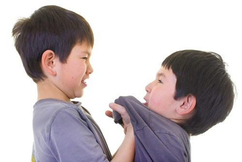

Giới thiệu
Có phải bạn đang có vấn đề hay suy nghĩ, thắc mắc, câu hỏi nào còn mông lung về hiện tượng gây hấn xảy ra ở học sinh THCS? Liệu bạn có đang cần sự trợ giúp, hỗ trợ và tư vấn thêm về thông tin liên quan đến “ Hành Vi Gây Hấn ”?
Vậy thì bạn đã đúng khi lựa chọn và tìm đến chúng tôi.
YCS hay “Your Companion Site” được thành lập nên nhằm mục đích hỗ trợ các bạn ở độ tuổi vị thành niên, cái độ tuổi niên thiếu nhạy cảm, bồng bột , nhất là học sinh THCS ‘phòng’ và ‘ngừa’ hành vi gây hấn. Đây sẽ là một cộng đồng các học sinh nơi các bạn có thể giao lưu, trò chuyện hay chia sẻ những vấn đề chính mình đang gặp liên quan đến hành vi gây hấn phải nhờ đến những lời góp ý và sự hỗ trợ.
Hãy để chúng tôi là một cánh tay giải tỏa trong bạn những thắc mắc, bối rối. Hãy lan tỏa đến mọi người xung quanh và giữ mãi nụ cười ngây thơ của thời áo trắng bạn nhé!
HOTLINE: 111 & 1022
Tham Khảo

Hành vi gây hấn - Phân tích từ góc độ Tâm lý học xã hội
Công trình "Hành vi gây hấn – Phân tích từ góc độ Tâm lý học xã hội" nhận Giải thưởng Công trình Khoa học - Công nghệ tiêu biểu ĐHQGHN năm 2011. Công trình tập trung nghiên cứu hiện tượng tâm lý xã hội - hành vi gây hấn, từ các khía cạnh như chiến tranh, tàn sát, tranh luận, bạo loạn đến bạo lực gia đình và học đường.
Nội dung phân tích các khía cạnh của hành vi gây hấn, từ quan điểm văn hóa và giới, và cung cấp cái nhìn sâu sắc về nguy cơ và hậu quả của hành vi này. Công trình chia thành năm chương, từ việc phơi bày kiểu gây hấn đa dạng, đánh giá các quan điểm khoa học, tới phân tích các yếu tố sinh học xã hội và tác động của truyền thông.
Công trình đóng góp cho lý luận Tâm lý học xã hội và cung cấp thông tin thực tiễn về tình hình gây hấn trong học đường và gia đình ở Việt Nam. Nó có giá trị cho giảng dạy và nghiên cứu trong lĩnh vực này và hỗ trợ chính sách xã hội và giáo dục. Công trình cung cấp tài liệu tham khảo cho những người quan tâm đến vấn đề học đường và gia đình và có thể được sử dụng trong đào tạo tại các trường Đại học và Viện nghiên cứu.
trích từ “ ĐHQGHN 2011”
Hung hăng, gây hấn - Hành vi tâm lý lệch chuẩn
Sự hung hăng, trong tâm lý học xã hội, là một hành vi nhằm làm hại người khác mà họ không muốn bị tổn thương. Hành vi này bao gồm xâm lược, xâm chiếm và các hành vi hiếu chiến, có thể gây hại về thể chất và tâm lý. Trên mạng xã hội, có những trường hợp livestream chửi rủa, kích động và thậm chí kêu gọi tấn công cá nhân, đều là hành vi gây hấn đáng bị lên án.
Sự hung hăng có thể là dấu hiệu của tình trạng sức khỏe tâm thần tiềm ẩn hoặc rối loạn sử dụng chất kích thích. Nó có thể xuất hiện dưới nhiều dạng, bao gồm hung hăng thụ động và hung hăng phản ứng. Các dấu hiệu của sự hung hăng có thể bao gồm hành vi về thể chất, lời nói, hoặc ảnh hưởng đến quan hệ tình cảm.
Nguyên nhân của sự hung hăng không rõ ràng và có thể bao gồm yếu tố sinh học, môi trường và tâm lý. Sự hung hăng có thể gây hại cho sức khỏe và quan hệ cá nhân, liên quan đến chứng viêm mạn tính và tình trạng tâm thần. Việc quản lý cơn giận và học cách đối phó với cảm xúc có thể giúp kiểm soát hành vi hung hăng. Nếu bạn đối mặt với sự hung hăng từ người khác, bảo vệ tâm lý và thể chất của bạn là quan trọng, và cần tìm kiếm sự hỗ trợ khi cần.
trích từ “ Suc Khoe Doi Song - Hoang Nam ”
Gây Hấn là gì?
Trong tâm lý học, khoa học hành vi và khoa học xã hội, gây hấn là hành vi giữa những cá thể trong cùng một loài với mục đích sỉ nhục, gây đau đớn và tổn hại. Ferguson và Beaver (2009) định nghĩa "gây hấn là hành vi với ý định gia tăng sự thống trị xã hội của sinh vật liên quan tới vị trí thống trị của những sinh vật khác". Hành vi săn mồi và bảo vệ không được xem là gây hấn. Gây hấn tồn tại dưới nhiều hình thức: thể chất, tinh thần hay lời nói.
trích từ “ Wikipedia ”
Kỹ năng giải quyết xung đột trong học sinh
Chương trình hướng dẫn học sinh giải quyết xung đột nhằm đạt được các mục tiêu sau:
- Hiểu rõ nguyên nhân phát sinh xung đột giữa học sinh.
- Hiểu nguyên tắc và các bước giải quyết xung đột.
- Có khả năng áp dụng nguyên tắc và bước giải quyết xung đột.
- Hướng dẫn học sinh kiểm soát cảm xúc và giải quyết xung đột tích cực.
Chúng ta đề xuất đánh giá nguyên nhân xung đột giữa học sinh và các cách giải quyết xung đột, bao gồm việc nhận biết các nguyên nhân của mâu thuẫn và hậu quả của việc giải quyết mâu thuẫn theo cách tiêu cực. Chúng ta đặt ra các câu hỏi để khám phá nguyên nhân xung đột và cách giải quyết mâu thuẫn của học sinh trong thực tế.
Chúng ta kết luận rằng nguyên nhân xung đột có thể xuất phát từ sự khác biệt về suy nghĩ, mong muốn, và quan điểm của học sinh, cũng như từ thái độ không kiểm soát, ganh đua, và định kiến. Học sinh đã sử dụng nhiều cách giải quyết mâu thuẫn khác nhau, với hậu quả tiêu cực như gây hại cho tâm thể và tinh thần của họ, gây ra sự thiếu tình thương và làm mất đi sự đoàn kết.
Chúng ta đề xuất cách giải quyết xung đột tích cực, tập trung vào tôn trọng và lắng nghe ý kiến của nhau. Chúng ta thảo luận về câu chuyện về việc giải quyết xung đột giữa giáo viên và học sinh, nhấn mạnh tầm quan trọng của bình tĩnh, sự thiện chí, và tạo ra môi trường an toàn để giải quyết xung đột.
Chúng ta cũng được hướng dẫn vận dụng cách giải quyết xung đột tích cực vào các tình huống thực tế. Chúng ta thảo luận và đưa ra cách giải quyết xung đột trong tình huống cụ thể để thực hành những nguyên tắc và bước giải quyết xung đột đã học. Điều này giúp chúng ta phát triển kỹ năng giải quyết xung đột một cách tích cực và hiệu quả.
trích từ “ Mo Cay Bac ”
Đà Nẵng công bố đường dây nóng hỗ trợ bảo vệ trẻ em
Tổng đài 1022 Đà Nẵng đã triển khai đường dây nóng hỗ trợ bảo vệ trẻ em, nhằm đối phó với nguy cơ xâm hại tình dục qua môi trường mạng. Dự án này được thực hiện trong hợp tác với Tổ chức Tầm nhìn thế giới Việt Nam và được tài trợ bởi Quỹ Chấm dứt bạo lực trẻ em (EVAC Fund). Tổng đài 1022 Đà Nẵng cung cấp thông tin và tư vấn về bảo vệ trẻ em thông qua nhiều kênh, bao gồm điện thoại, trang web góp ý, fanpage Zalo và fanpage Facebook với sự hỗ trợ của chatbot. Đây cũng là một nỗ lực để ngăn ngừa trẻ em tiếp cận thông tin có hại trên internet và đảm bảo quyền lợi của họ.
trích từ “ Bao Dien Tu Chinh Phu - Luu Huong ”
HOTLINE: 111 & 1022
Sự Kiện

Thời gian qua, chúng tôi đã hoạt động và tổ chức những sự kiện nhỏ như mini game, buổi tuyên truyền tại ngôi trường mà chúng tôi đang theo học- trường THCS Lê Độ.
HOTLINE: 111 & 1022
Liên Hệ